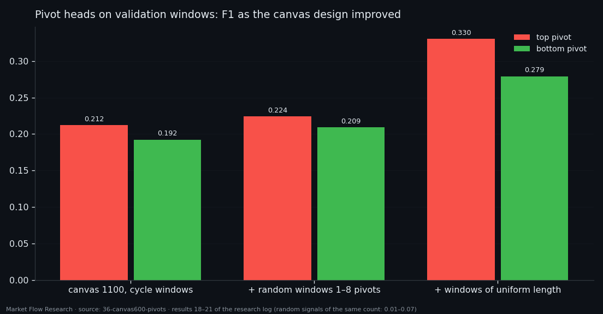
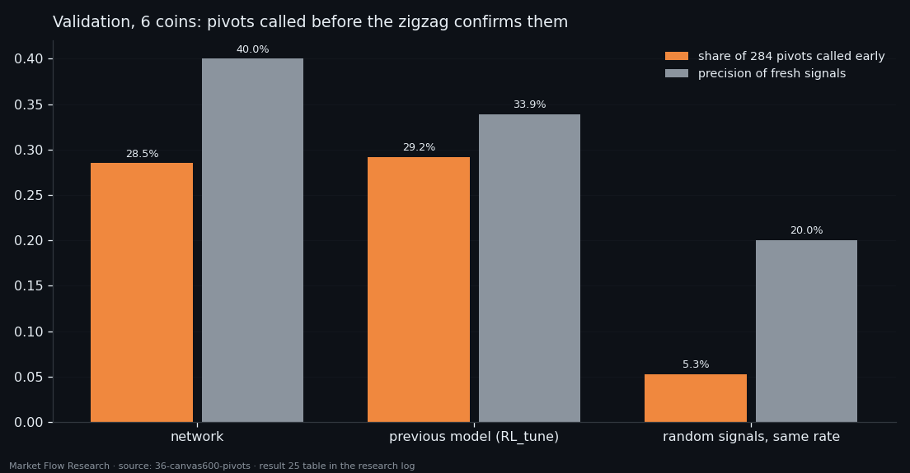
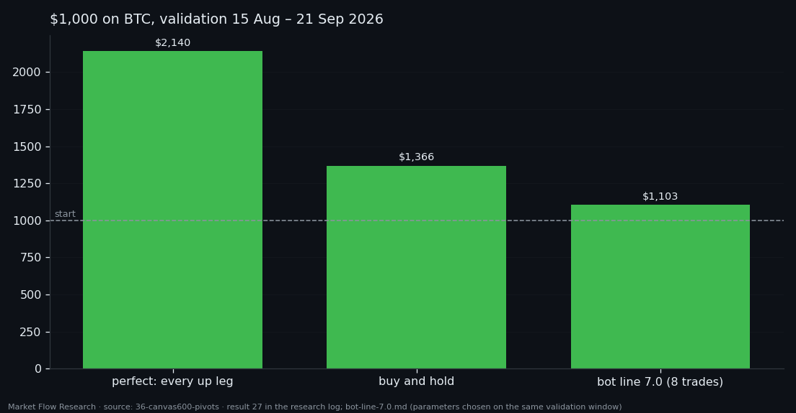

From a Canvas of the Whole Leg to a Buy-Only Bot — What Survived, and What It Earned
The last study of the series put a whole leg — and 50 rows on either side — onto one canvas and asked a network to mark pivots and corrections on it. On labelled windows it hit 38% of pivot zones; run live over the series, 5% of its pivot calls landed. A longer canvas, 160 hours on 100-second records, and windows of uniform length lifted precision to about 30%. Its best trick: 29% of pivots flagged a median 2.4 hours before the zigzag confirms them. The result became a paper-trading buy-only bot for BTC. On 38 days of validation it made +10.3% with eight trades and no stop-outs — while buying and holding made +36.6%, and its parameters were tuned on those same days.
① A canvas of the leg, and the signature it carries
The task was set in one sentence: data comes in, becomes a canvas, and the model says whether the canvas holds a 2.3% pivot zone — the start or the end of a leg, which are the same thing — and marks the corrections inside the leg as local. Every leg longer than 7 hours is laid onto 500 rows, with 50 rows added on each side, on the 30-second standard of the previous study: 600 × 7 features of `210×10-1×7d/d`. Six coins, 1,210 legs and 9,068 windows for training, 352 legs and 2,250 windows for validation.
Before training, the labels were refined: inside each labelled zone only the rows that actually carry the signal are kept. A grid chose the variant best correlated with the targets — all 7 features, a 3-row window, the peak within ±2 rows of the pivot, absolute values, a 0.7 quantile. The signal is present in 76% of start zones, 75% of end zones and 64% of correction zones, against 51–58% in controls.
The signature is stable: pivot windows from different legs correlate at 0.45–0.49, and negatively with the body of a leg (−0.18 to −0.19), on validation too. Start and end are one signal (0.468). A correction is a weaker version of it (0.28–0.29 with pivots). Resistance- and support-per-flow features are weakest next to a pivot, stronger in a correction, strongest in the body; flow-per-level goes the opposite way. And a leg's own start and end are no more alike than a start and an end of different legs — the pivot signature is shared by all legs.

② 38% on windows, 5% live — and how the canvas grew
The first three-class network (pivot / correction / body) found 38% of pivot zones on validation windows, and 38% of its pivot calls landed in a pivot zone; corrections were harder (F1 0.24). Validation held at the level of held-out training legs — no overfitting. Then it was run the way it would be used: sliding windows over the unlabelled validation series. Pivot-call precision fell to 4–7%, recall 15–29%. A labelled window already tells the network there is a leg in it; the live series does not.
Several rounds followed. Clustering the refined signals split them into "movement without levels" and "levels without movement". A longer canvas — 1,100 rows on 100-second records, 160 hours — found 41% of pivot zones on validation with 15% precision, four times random. Three output heads (top, correction, bottom) with a cycle of training windows reached F1 about 0.21 — six to eight times random, but five or six false calls per good one. Training on random windows with 1–8 pivots helped slightly. Training on windows of uniform length was the strongest step: top 0.224 → 0.330, bottom 0.209 → 0.279, and precision of the pivot heads rose for the first time to about 0.30 — two false calls per good one instead of five. The best window length on validation was 6–7 days. The correction head stayed at 0.15–0.17 in every run. Trading a flip strategy on the pivot-zone head over the validation month beat holding on no coin (three up, three down, the worst trades being shorts against a rising market).

③ Before the zigzag: 81 of 284 pivots, 2.4 hours early
A zigzag confirms a 2.3% pivot only after price has moved 2.3% away. The next head answered a live question at every moment T: is T inside a 2.3% pivot zone? Inputs were checked for leaks: the side-of-leg channel computed live on data cut at T matches the finished series on every event before T.
On six coins of validation (window 300 hours, a call every 10 minutes): 81 of 284 pivots (28.5%) were flagged before the zigzag, a median 2.4 hours earlier, when price had retraced 1.6% of the 2.3%. Random signals at the same rate: 15 of 284. Precision of fresh signals 40% (random 20%), 0.76 signals per coin per day, F1 0.333. The previous model without this training was close (0.314), so the gain over it is small. Held-out training legs gave 0.569 — but they took part in choosing epoch, threshold and window, and validation was a different market (a month of growth on all coins); validation is the honest number. XRP, with the most short legs, was weakest (8 of 84).

④ The buy-only bot: bottoms only, BTC only — and honest about its test
The last stage narrowed everything to what can be traded simply: BTC, buying only, bottoms only. A transformer on the 1,100 × 8 canvas (160 hours up to T, the eighth channel is the probability of the "levels without movement" cluster) outputs P(T is in the bottom zone of a 2.3% leg of at least 7 hours). The buy signal is the sum of P over the last 180 minutes ≥ 11.74 (the 0.97 quantile of that sum). Take-profit 2% above the lowest price since entry, stop-loss 2% below entry, a signal after a closed trade without a 2.3% rise in between is treated as fake. Costs: 0.05% fee plus 0.02% slippage per side.
On validation (15 August – 21 September, twelve 2.3% up legs): 8 trades, all closed by take-profit, no stops, $1,000 → $1,103.17 — 12.2% of what a perfect catcher of every up leg would make ($2,140), and below buy-and-hold ($1,366). The loss functions tried on the way mostly failed on validation (BCE: AUC 0.657, precision 2% on a 0.7% base); what worked was a wider target (bottom zone ± 2 hours), a penalty for silence, and summing over time.
The honest caveat is written into the bot's own file: model, threshold and trade parameters were chosen and measured on the same 12 validation legs — there is no separate segment that confirms them. So this is the series' first complete trading candidate, not a proven strategy. It runs in paper mode only, sends no orders, and its full description — how to rebuild it from raw collector data, every parameter and the checksum of the model — is attached below.

Reproduce this study
- Research log (.md, Ukrainian): goal, data, plan, scripts, every confirmed stage and table — enough to rerun the study
- Reproduction kit (.zip): the study's scripts, project rules and base scripts that build every class
- bot-line-7.0.md (.md, Ukrainian): the exported bot built from this study — model, signal, trade rules, how to rebuild it from raw data
If this changed how you read the tape, the natural next step is Volume Is the Fuel — Not the Steering Wheel — We recorded the Binance order book every second for six coins over five months and ran eighteen tests on what volume really does.
Volume Is the Fuel — Not the Steering Wheel
We recorded the Binance order book every second for six coins over five months and ran eighteen tests on what volume really does.
About Market Research Lab — What We Collect and Why
Most market commentary is storytelling.
From Calm to Calm: a Standard for What Counts as a Signal (BTC)
We stopped defining market signals with a stopwatch.
The Wall That Goes Quiet: What Resting Liquidity Predicts
We measured resting limit liquidity sitting on both sides of the book second by second across six coins, and asked the only question that matters:….
Comments
Discussion is powered by GitHub. Enable it by adding secrets/giscus.json (repo IDs from giscus.app).